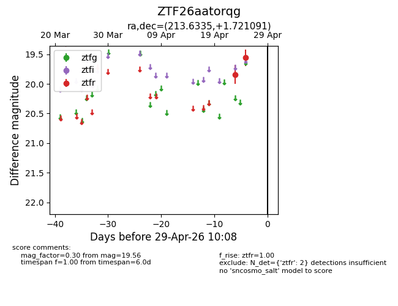
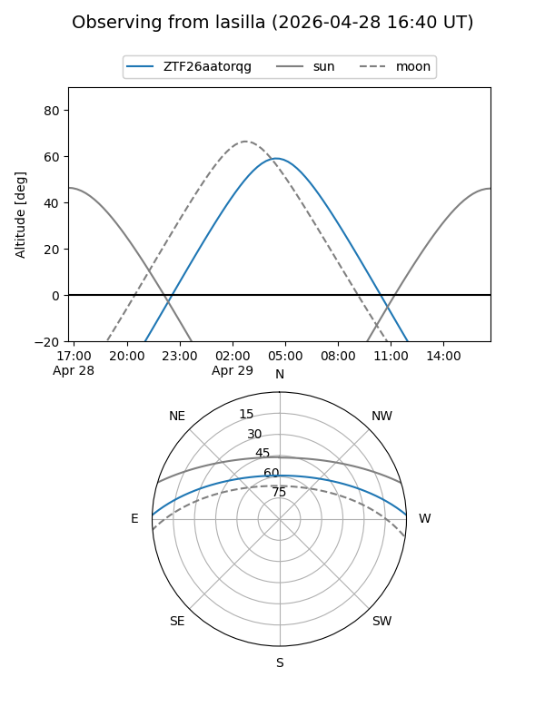
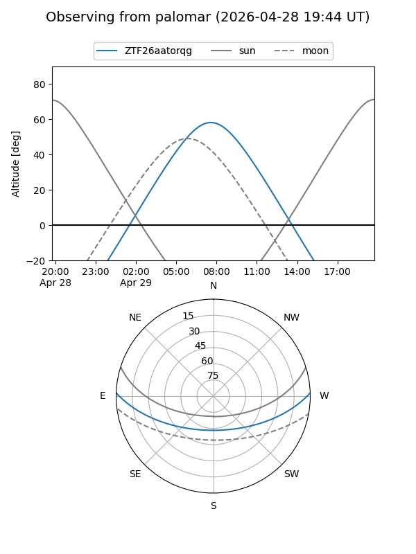

ZTF26aatorqg
Target ZTF26aatorqg at 2026-04-29 10:11
Aliases and brokers:
FINK: link
Lasair: link
ALeRCE: link
alt names
ZTF26aatorqg (ztf,fink_ztf)
Coordinates:
equatorial (ra, dec) = 213.6335,+1.72109
equatorial (HMS+DMS) = 14:14:32.05,+01:43:15.93
galactic (l, b) = (344.5243,+57.71980)
Flags:
Photometry:
last ztfr=19.56
2 ztfr detections
Lightcurve

Visibility


Additional plots